(28) new code + gaus + logistic + lin#
Motivation: host = yoru, device = cuda:0
Show code cell source
# HIDE CODE
import os, sys
from IPython.display import display
# tmp & extras dir
git_dir = os.path.join(os.environ['HOME'], 'Dropbox/git')
extras_dir = os.path.join(git_dir, 'jb-vae/_extras')
fig_base_dir = os.path.join(git_dir, 'jb-vae/figs')
tmp_dir = os.path.join(git_dir, 'jb-vae/tmp')
# GitHub
sys.path.insert(0, os.path.join(git_dir, '_iclr_ipvae'))
from main.config_defaults import default_configs
from figures.convergence import plot_convergence
from figures.fighelper import *
from main.train import *
# warnings, tqdm, & style
warnings.filterwarnings('ignore', category=DeprecationWarning)
warnings.filterwarnings('ignore', category=FutureWarning)
warnings.filterwarnings('ignore', category=UserWarning)
from rich.jupyter import print
%matplotlib inline
set_style()
device_idx = 0
device = f'cuda:{device_idx}'
print(f"device: {device} ——— host: {os.uname().nodename}")
device: cuda:0 ——— host: yoru
ICLR code: Poisson + vH16#
model_type = 'gaussian'
cfg_vae, cfg_tr = default_configs('Kyoto16-bw', model_type, 'ngd|lin')
t_train = 16
cfg_vae['t_train'] = t_train
cfg_vae['kl_beta'] = 2/8 * t_train
cfg_vae['latent_act'] = 'logistic'
cfg_vae['track_stats'] = True
Make model + trainer#
model = MODEL_CLASSES[model_type](CFG_CLASSES[model_type](**cfg_vae))
tr = Trainer(model, ConfigTrain(**cfg_tr), device=device)
tr.n_iters
156800
Print info#
model.print()
tr.print()
tr.show_schedules()
+-------------+------------+ | Module Name | Num Params | +-------------+------------+ | IGVAE | 134.1 K | | ——— | ——— | | layer | 134.1 K | +-------------+------------+
gaussian+logistic_Kyoto16-bw_t-16_b-4_k-512_<ngd|lin> b200-ep800-lr(0.001)_gr(200)_(2025_05_28,21:55)
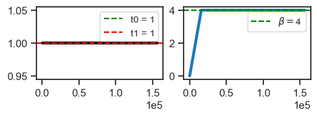
print(f"{vars(tr.model.cfg)}\n\n\n{vars(tr.cfg)}")
{'_type': 'gaussian', 'latent_act': 'logistic', 't_train': 16, 'kl_beta': 4.0, 'n_latents': 512, 'enc_type': 'ngd', 'dec_type': 'lin', 'recon_mode': 'mse', 'dataset': 'Kyoto16-bw', 'dataset_name': 'Kyoto16-bw', 'feeder': 'stationary', 'feeder_cfg': {}, 'input_sz': (1, 16, 16), 'shape': (-1, 1, 16, 16), 'init_dist': 'normal', 'init_scale': 0.0001, 'clamp_vals': {'u': (7.0, 2.0), 'du': (7.0, 3.0), 'dec': 3.45}, 'stochastic': True, 'fit_dec_var': False, 'fit_prior': True, 'seed': 0, 'track_stats': True, 'base_dir': '/home/hadi/Projects/PoissonVAE', 'data_dir': '/home/hadi/Datasets', 'runs_dir': '/home/hadi/Projects/PoissonVAE/runs/gaussian+logistic_Kyoto16-bw_t-16_b-4_k-512_<ngd|lin>', 'mods_dir': '/home/hadi/Projects/PoissonVAE/models/gaussian+logistic_Kyoto16-bw_t-16_b-4_k-512_<ngd|lin>', 'results_dir': '/home/hadi/Projects/PoissonVAE/results'} {'lr': 0.001, 'epochs': 800, 'batch_size': 200, 'dataset_kws': None, 'warm_restart': 0, 'warmup_portion': 0.005, 'optimizer': 'adamax_fast', 'optimizer_kws': {'weight_decay': 0.0, 'betas': (0.9, 0.999), 'eps': 1e-08}, 'scheduler_type': 'cosine', 'scheduler_kws': {'T_max': 796.0, 'eta_min': 1e-05}, 'ema_rate': None, 'grad_clip': 200, 'chkpt_freq': 50, 'eval_freq': 20, 'log_freq': 10, 'method': 'mc', 'kl_beta_min': 0.0001, 'kl_const_portion': 0.001, 'kl_anneal_portion': 0.1, 'temp_anneal_portion': 0.0, 'temp_anneal_type': 'lin', 'temp_start': 1.0, 'temp_stop': 1.0}
print(tr.model.cfg.clamp_vals)
{'u': (7.0, 2.0), 'du': (7.0, 3.0), 'dec': 3.45}
Fit model#
tr.train('phase9:gaus+logistic+lin')
wandb: ERROR Failed to detect the name of this notebook. You can set it manually with the WANDB_NOTEBOOK_NAME environment variable to enable code saving.
Warning: Could not save code info: Reference at 'refs/heads/main' does not exist
Warning: Could not save notebook info: Can't identify the notebook path.
epoch # 800, avg loss: 6.014: 100%|█████████| 800/800 [3:16:17<00:00, 14.72s/it]
View run gaussian+logistic_Kyoto16-bw_t-16_b-4_k-512_/b200-ep800-lr(0.001)_gr(200)_phase9:gaus+logistic+lin_(2025_05_28,21:55) at: https://wandb.ai/yateslab/_iclr_ipvae/runs/p7cb8y3f
View project at: https://wandb.ai/yateslab/_iclr_ipvae
Synced 4 W&B file(s), 32 media file(s), 0 artifact file(s) and 38 other file(s)
View project at: https://wandb.ai/yateslab/_iclr_ipvae
Synced 4 W&B file(s), 32 media file(s), 0 artifact file(s) and 38 other file(s)
Task: reproduce this while gradually updating the code
Conclusion:
a = 'gaussian+logistic_Kyoto16-bw_t-16_b-4_k-512_<ngd|lin>'
b = 'b200-ep800-lr(0.001)_gr(200)_phase9:gaus+logistic+lin_(2025_05_28,21:55)'
tr, meta = load_model_main(a, b, device=device)
meta['checkpoint']
800
u_max = np.array(tr.model.stats['u_max'])
du_max = np.array(tr.model.stats['du_max'])
fig, ax = create_figure()
ax.plot(u_max, color='k', label='u', lw=0.2)
ax.plot(du_max, color='r', label='du', alpha=0.7, lw=0.2)
ax.legend()
plt.show()
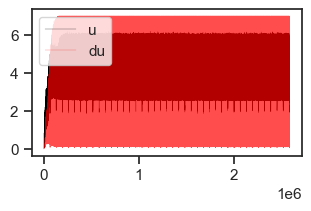
max(tr.model.stats['du_max']), np.quantile(tr.model.stats['du_max'], 0.999)
(7.0, 7.0)
max(tr.model.stats['u_max']), np.quantile(tr.model.stats['u_max'], 0.999)
(6.194482803344727, 6.0229165134429925)
%%time
kws = dict(
t_total=1000,
n_data_batches=10,
compute_sprs=True,
)
results = tr.analysis(dl='vld', **kws)
_ = plot_convergence(results, color='C0')
100%|█████████████████████████████████| 10/10 [00:20<00:00, 2.01s/it]
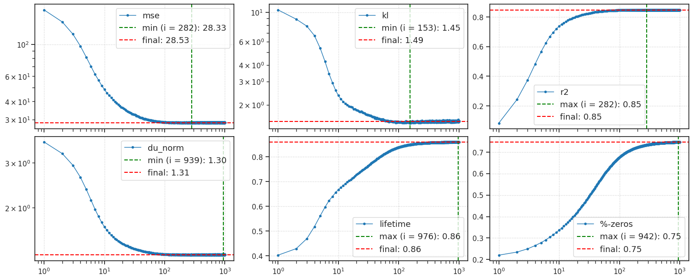
CPU times: user 27.1 s, sys: 728 ms, total: 27.8 s
Wall time: 27.8 s
u0 = tonp(tr.model.layer.u_init[0].squeeze())
tr.model.show(order=np.argsort(u0), dpi=200, pad=1);
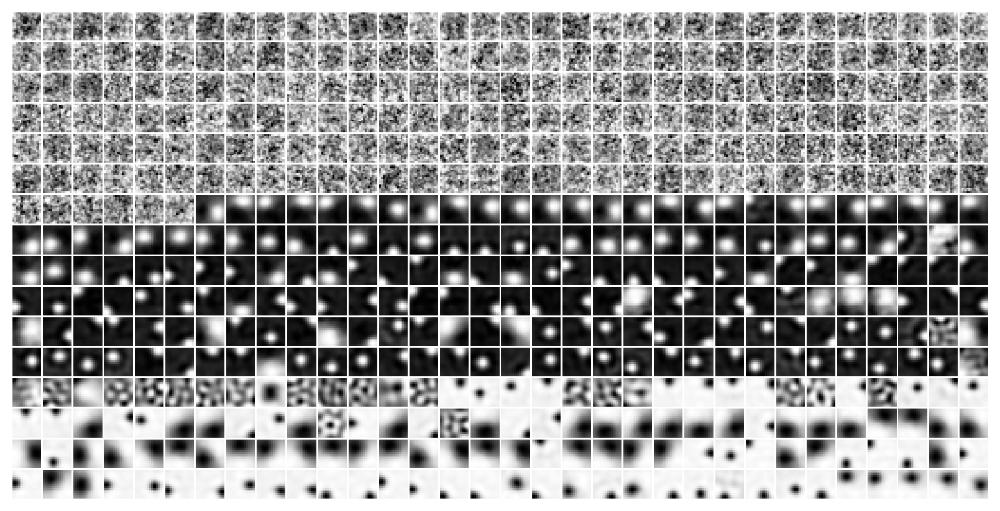
a = 'gaussian+logistic_Kyoto16-bw_t-16_b-4_k-512_<ngd|lin>'
b = 'b200-ep800-lr(0.001)_gr(200)_phase9:gaus+logistic+lin_(2025_05_28,21:55)'
tr, meta = load_model_main(a, b, device=device)
meta['checkpoint']
800
results = tr.xtract_ftr(
t_total=100, save_freq=100, n_data_batches=10,
return_recon=True, verbose=True, only_pos_r2=False,
)
list(results)
100%|█████████████████████████████████| 10/10 [00:03<00:00, 2.89it/s]
['r2',
'mse',
'du_norm_0',
'du_norm_1',
'samples',
'state_0',
'state_1',
'recon',
'times']
results['r2'].shape
(100,)
plot(results['r2'])
plt.show()
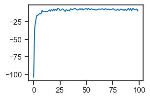
x = next(iter(tr.dl_vld))[0]
x = x.flatten(start_dim=1)
x.shape
torch.Size([200, 256])
recons = {}
for mode in ['prob', 'mse', 'exact', 'r2']:
recons[mode] = tr.model.layer.loss_recon(x, mode=mode)
recons
{'prob': tensor([236.6783, 236.2905, 237.7992, 235.4610, 235.5799, 235.7795, 235.8952,
235.8530, 235.6398, 235.6202, 235.9300, 235.6465, 236.5734, 237.5019,
236.7519, 235.6751, 236.8187, 236.0257, 236.0469, 236.0350, 239.1186,
236.3915, 237.3776, 236.4357, 236.8983, 237.5939, 236.0420, 237.7124,
235.8446, 238.1609, 239.8560, 238.6200, 236.7257, 238.0608, 241.0871,
236.0018, 235.8383, 235.4381, 237.0403, 238.2751, 237.3226, 237.6045,
238.1951, 238.6528, 235.5467, 237.1344, 237.2207, 236.3274, 236.3522,
236.4955, 236.7299, 236.3699, 236.9488, 238.2645, 237.5143, 237.0267,
238.4932, 238.0488, 236.2739, 235.9322, 237.6414, 236.4635, 235.9622,
238.5858, 236.5074, 236.1233, 236.1545, 235.5725, 235.8770, 237.0367,
236.2053, 236.4285, 235.8786, 236.4484, 236.4467, 235.7178, 236.7467,
237.0002, 236.3096, 238.0395, 237.6018, 237.4716, 236.9843, 236.5035,
235.9551, 236.3602, 236.7237, 240.2190, 236.1391, 236.9570, 236.9140,
239.4021, 237.4569, 237.4186, 235.9145, 237.8819, 236.5464, 235.6328,
236.1654, 235.3375, 236.9861, 236.0886, 236.1155, 237.0049, 236.3159,
236.8511, 239.2815, 236.4224, 236.3682, 236.3502, 235.5852, 237.9367,
236.6487, 236.3713, 235.5715, 235.7892, 237.1227, 236.5204, 235.5811,
238.5843, 236.6316, 236.7322, 237.4910, 236.5708, 235.3318, 236.8982,
237.9147, 235.6432, 236.0702, 236.1830, 235.4364, 236.6056, 235.9261,
237.7551, 240.7862, 239.0233, 236.5520, 236.8152, 235.9051, 238.3866,
240.5119, 236.7176, 235.4089, 236.3754, 236.4527, 236.2150, 237.5971,
236.0373, 235.4539, 236.1928, 235.9067, 236.1893, 235.6555, 236.5818,
236.3563, 237.1568, 236.2309, 237.0716, 237.3833, 237.5940, 236.4654,
238.3309, 237.6346, 238.8237, 236.5878, 236.4577, 236.2770, 237.7441,
235.6271, 238.6440, 236.1499, 236.6320, 236.2852, 238.1675, 236.7918,
236.7399, 237.7003, 239.2465, 239.0592, 241.4976, 237.9913, 239.1870,
235.9588, 236.9249, 236.1514, 239.5847, 238.1983, 236.1265, 238.8665,
238.3656, 239.6861, 235.6833, 238.2832, 235.5362, 237.2090, 235.6919,
235.8632, 236.5357, 236.6120, 236.3408], device='cuda:0'),
'mse': tensor([ 2.8600, 2.0846, 5.1018, 0.4255, 0.6632, 1.0624, 1.2939, 1.2095,
0.7830, 0.7440, 1.3634, 0.7966, 2.6502, 4.5072, 3.0074, 0.8537,
3.1410, 1.5549, 1.5973, 1.5735, 7.7407, 2.2865, 4.2588, 2.3749,
3.3000, 4.6914, 1.5875, 4.9282, 1.1928, 5.8252, 9.2156, 6.7435,
2.9549, 5.6250, 11.6777, 1.5070, 1.1800, 0.3797, 3.5841, 6.0537,
4.1487, 4.7126, 5.8937, 6.8091, 0.5969, 3.7723, 3.9449, 2.1583,
2.2079, 2.4945, 2.9634, 2.2432, 3.4010, 6.0325, 4.5321, 3.5570,
6.4898, 5.6011, 2.0512, 1.3678, 4.7864, 2.4305, 1.4280, 6.6750,
2.5182, 1.7501, 1.8126, 0.6484, 1.2574, 3.5768, 1.9141, 2.3605,
1.2607, 2.4002, 2.3969, 0.9391, 2.9969, 3.5040, 2.1227, 5.5825,
4.7072, 4.4467, 3.4721, 2.5105, 1.4136, 2.2238, 2.9508, 9.9414,
1.7817, 3.4176, 3.3315, 8.3077, 4.4173, 4.3407, 1.3324, 5.2673,
2.5962, 0.7690, 1.8343, 0.1785, 3.4757, 1.6806, 1.7345, 3.5133,
2.1354, 3.2057, 8.0665, 2.3482, 2.2399, 2.2038, 0.6738, 5.3768,
2.8009, 2.2462, 0.6464, 1.0818, 3.7489, 2.5443, 0.6656, 6.6721,
2.7668, 2.9678, 4.4855, 2.6452, 0.1671, 3.2998, 5.3329, 0.7899,
1.6439, 1.8696, 0.3762, 2.7147, 1.3557, 5.0136, 11.0760, 7.5500,
2.6075, 3.1339, 1.3137, 6.2768, 10.5272, 2.9387, 0.3213, 2.2542,
2.4088, 1.9335, 4.6978, 1.5781, 0.4112, 1.8891, 1.3169, 1.8821,
0.8145, 2.6672, 2.2161, 3.8170, 1.9652, 3.6466, 4.2701, 4.6914,
2.4342, 6.1652, 4.7728, 7.1508, 2.6791, 2.4190, 2.0574, 4.9917,
0.7577, 6.7915, 1.8033, 2.7675, 2.0738, 5.8384, 3.0871, 2.9833,
4.9040, 7.9965, 7.6219, 12.4987, 5.4861, 7.8774, 1.4211, 3.3533,
1.8063, 8.6729, 5.9000, 1.7564, 7.2364, 6.2347, 8.8757, 0.8701,
6.0699, 0.5759, 3.9215, 0.8873, 1.2299, 2.5748, 2.7275, 2.1850],
device='cuda:0'),
'exact': tensor([ 1051.7141, 11162.5605, 5690.0430, 8134.5063, 1103.0034, 956.7590,
532.2538, 892.9013, 1569.1455, 842.4584, 1110.5656, 1469.3801,
1790.4901, 2447.4622, 4321.7344, 810.2953, 529.2958, 3232.7339,
2424.6907, 722.7291, 2340.7168, 839.1954, 2888.7349, 753.3635,
2029.7896, 2098.4839, 4392.7241, 1609.1608, 9425.8496, 1916.6144,
2516.3252, 1539.7860, 6283.8296, 2880.9221, 1669.4017, 2833.0835,
1982.3389, 1365.1650, 2868.2075, 810.8041, 5100.7222, 2485.5828,
1275.2119, 1757.0171, 468.1676, 1552.7291, 1024.3108, 1835.2705,
632.9424, 722.0140, 995.0217, 1354.4938, 1207.1116, 2551.4072,
1906.1931, 2586.6494, 2365.4153, 7449.5728, 3480.0542, 1346.9659,
1614.7625, 1373.7181, 10082.8232, 5309.0190, 654.8486, 3769.8601,
785.2180, 3378.1331, 2215.6943, 1166.1797, 485.6649, 992.3341,
8979.1299, 836.2941, 995.8474, 1929.2695, 759.1265, 1819.2731,
841.6559, 1099.4584, 2464.3413, 1369.6760, 5452.4209, 2202.6687,
1072.9939, 1095.3412, 1089.6873, 4564.3696, 592.1941, 683.1813,
1329.7245, 1297.1849, 761.5947, 783.3984, 1355.2246, 1589.8558,
3250.1665, 8862.3193, 898.4844, 2518.7766, 1944.2211, 10238.9619,
2083.1743, 2268.6106, 1190.0035, 2952.1531, 1780.2234, 2856.8081,
1219.0936, 5730.6196, 547.8101, 1391.8062, 1121.9380, 985.8687,
8067.5132, 983.1480, 4374.7632, 710.1699, 3480.7112, 1409.8545,
5815.2222, 1172.6431, 5772.7212, 710.1232, 3485.0503, 935.9071,
3693.2336, 2791.8225, 6581.5635, 1288.3373, 1056.7931, 1762.6884,
509.2434, 943.3019, 5360.1504, 2196.9314, 1300.0167, 1785.3179,
2937.9785, 1275.8756, 2828.0620, 5058.8374, 2674.3413, 589.5417,
2782.2927, 1484.9709, 1487.2708, 712.3942, 543.6431, 640.5533,
2158.5225, 1880.2506, 1591.0378, 4626.5381, 2135.1487, 2126.8877,
8822.4697, 1187.4558, 1298.6356, 4815.3330, 4861.5674, 1265.0269,
1731.9117, 1156.4578, 1210.7987, 853.6568, 816.1144, 1510.9214,
696.7374, 1981.0342, 7572.8628, 2567.6953, 912.9159, 3766.7388,
1507.6287, 458.7574, 1614.4637, 2227.3984, 1117.9244, 1410.9243,
2108.8521, 1805.2811, 775.9999, 3985.7236, 575.6012, 3049.6082,
2509.8691, 2406.7012, 2488.9766, 1329.5751, 2402.9060, 1487.1520,
1072.6041, 2395.0225, 6220.3516, 10791.7793, 1104.6997, 1037.4514,
1962.4386, 1416.7107], device='cuda:0', grad_fn=<AddBackward0>),
'r2': tensor([ 4.7990e-01, -1.6590e+01, 4.9196e-01, 6.6355e-02, -7.7427e+00,
1.6396e-01, 3.1919e-01, 3.7461e-01, 6.4962e-01, -1.0963e-01,
-5.6960e-01, 7.4538e-01, 2.6335e-01, 6.8692e-01, 2.1279e-01,
1.6464e-02, 2.6977e-01, 8.1835e-01, 3.6910e-01, 2.4054e-01,
4.0578e-01, 5.4877e-01, 3.6024e-01, -6.2724e-03, 6.0491e-01,
2.9615e-01, 3.8711e-01, -8.1841e-02, 4.3021e-01, 4.2460e-01,
6.4831e-01, 4.3589e-01, 4.6807e-01, 5.5542e-01, 4.6018e-01,
6.7326e-02, 6.5640e-01, -1.3106e-01, 6.0598e-01, 2.0482e-01,
3.2326e-01, 1.8907e-01, 3.2745e-01, 4.4454e-01, 3.5407e-01,
4.8776e-01, 2.6058e-01, 3.1673e-01, 2.7265e-01, 3.0121e-01,
5.1713e-01, 4.3019e-01, 6.1357e-01, 5.2800e-01, 2.6373e-01,
3.8865e-01, 6.7429e-01, 7.2224e-01, -1.0666e+00, 1.8912e-01,
1.9704e-01, 4.8381e-01, -3.8834e+00, 4.9180e-01, 3.5284e-01,
1.7044e-02, 5.1474e-01, 7.9994e-01, 2.1393e-01, 5.3769e-01,
3.9787e-02, 2.7204e-01, -1.6734e+00, 3.4802e-01, 4.0680e-01,
3.1344e-01, 4.6727e-01, 4.4517e-01, 1.2162e-01, 4.8590e-01,
7.4536e-01, 3.7419e-01, 7.4736e-01, 5.3177e-01, 7.1745e-01,
4.5274e-01, 3.8065e-01, 4.5121e-01, 5.2617e-01, 3.7484e-01,
5.5649e-01, 3.1725e-01, 4.1884e-01, 3.7093e-01, 7.0536e-01,
5.2176e-01, 5.8534e-01, -5.0661e+01, 4.3287e-01, -4.0368e+00,
3.2067e-01, -5.2986e-01, 1.8520e-01, 4.4346e-01, 4.2905e-01,
3.3741e-01, 4.5788e-01, 7.1834e-01, 3.0781e-01, 6.1679e-01,
1.1057e-01, 5.6531e-01, 7.3793e-01, 5.0284e-01, -3.7088e+01,
-6.4919e-02, 5.3799e-01, 1.5463e-01, -2.5242e-01, 5.7166e-01,
5.9384e-01, 4.5404e-01, 2.2013e-01, 5.3046e-01, 9.2027e-01,
4.8891e-01, 5.7292e-01, -3.8157e-01, 4.0315e-01, 4.9168e-01,
-9.1624e-01, 7.0089e-01, 5.5796e-01, 5.7697e-01, 5.4110e-01,
6.1542e-01, 3.9264e-01, 7.6056e-01, 1.8099e-01, 5.0590e-01,
4.3435e-01, 6.5074e-01, -5.5593e-01, 3.0203e-01, 8.3355e-01,
2.6023e-01, 6.3863e-01, -4.2373e-02, -1.0716e+00, 2.6906e-01,
6.6076e-01, 4.9029e-01, 5.0509e-01, 6.1751e-01, 1.0565e-01,
7.8452e-01, 5.7836e-01, 5.6507e-01, 5.1940e-01, -2.9716e-01,
5.3918e-01, 5.5308e-01, 4.0380e-01, 4.4274e-01, 4.3425e-01,
4.1782e-01, 5.5695e-01, 2.1777e-01, 1.9710e-01, 7.1012e-01,
6.1637e-01, 5.9193e-01, 5.5973e-01, 5.3188e-01, 5.1683e-01,
4.5051e-01, 5.2348e-01, 5.8863e-01, 2.4464e-01, 5.4176e-01,
6.8282e-01, 5.1933e-01, 2.7188e-01, 4.9031e-01, 9.6590e-02,
6.1085e-01, 5.2760e-01, 3.2042e-01, 6.2144e-01, 4.8013e-01,
6.8524e-01, 7.1372e-01, 3.8990e-01, 1.4085e-01, 5.7658e-01,
-5.8504e+01, 2.0822e-01, 9.9208e-02, 6.2217e-01, 4.4126e-01],
device='cuda:0')}
bins = np.linspace(0, 1 + 0.02, 52) - 0.01
histplot(recons['r2'], bins=bins)
plt.show()
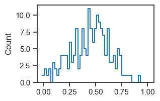
r2 = tonp(recons['r2']).copy()
r2 = r2[r2 >= 0]
r2.mean()
0.451468
r2 = recons['r2']
r2 = r2[r2 >= 0]
torch.mean(r2, dim=0)
tensor(0.4515, device='cuda:0')
bias = tonp(tr.model.layer.log_bias.exp().squeeze())
u0 = tonp(tr.model.layer.u_init[0])
phi_u0 = tonp(tr.model.layer.apply_activation(tr.to(u0)))
u0 = u0.squeeze()
phi_u0 = phi_u0.squeeze()
u0.shape, phi_u0.shape
((512,), (512,))
fig, axes = create_figure(1, 2, (10, 2))
kws = dict(fill=True, lw=3, alpha=0.3, ax=axes[0])
sns.histplot(u0, color='C0', element='step', label='u0', **kws)
kws = dict(fill=True, lw=3, alpha=0.3, ax=axes[1])
sns.histplot(phi_u0, color='C0', element='step', label='phi(u0)', **kws)
sns.histplot(bias, color='C8', element='step', label='bias', **kws)
axes[1].set(ylabel='')
add_legend(axes)
plt.show()
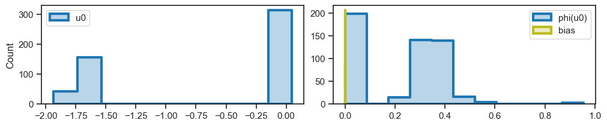
histplot(bias, color='C8', lw=3)
plt.show()
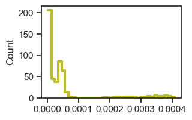
(bias > 0).mean()
1.0
bias[dead]
array([], dtype=float32)
self = tr.model.layer
phi = self.dec.weight
phi.shape
torch.Size([256, 512])
phi_correct = self.dec.get_weight()
phi_correct.shape
torch.Size([256, 512])
phi_correct - phi
tensor([[0., 0., 0., ..., 0., 0., 0.],
[0., 0., 0., ..., 0., 0., 0.],
[0., 0., 0., ..., 0., 0., 0.],
...,
[0., 0., 0., ..., 0., 0., 0.],
[0., 0., 0., ..., 0., 0., 0.],
[0., 0., 0., ..., 0., 0., 0.]], device='cuda:0',
grad_fn=<SubBackward0>)
mult = 1
results = tr.xtract_ftr(
t_total=tr.model.cfg.t_train * mult,
save_freq=mult,
n_data_batches=10,
data_batch_sz=2000,
verbose=False,
)
fig, ax = create_figure(1, 1, (9, 3.5))
pal = get_cubehelix_palette(len(results['times']), start=2.5)
for i, t in enumerate(results['times']):
sns.histplot(
results['state_0'][:, i].ravel(),
stat='percent',
element='step',
fill=False,
color=pal[i],
label=f"T = {t}",
ax=ax,
)
ax.legend(loc='upper left')
ax.grid()
plt.show()
fig, axes = create_figure(2, 1, (8, 5.8), sharex='col')
for i, t in enumerate(results['times']):
for ax in axes.flat:
sns.histplot(
np.exp(results['state_0'][:, i].ravel()),
stat='percent',
element='step',
fill=False,
color=pal[i],
label=f"T = {t}",
ax=ax,
)
axes[0].legend()
axes[1].set(yscale='log')
add_grid(axes)
plt.show()
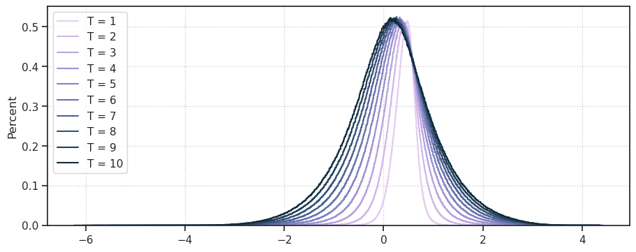
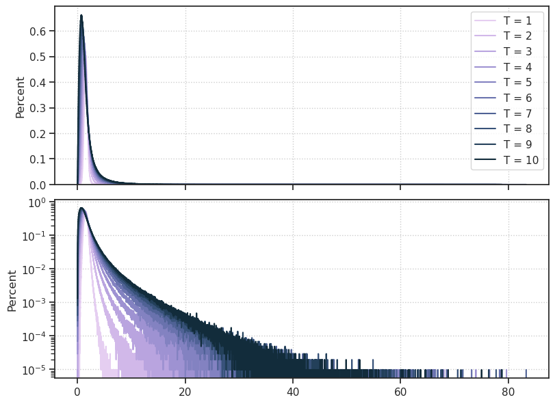
pal
grad = np.array(list(tr.stats['grad'].values()))
fig, axes = create_figure(1, 2)
axes[0].plot(np.log(grad))
axes[1].plot(np.log(grad)[:300])
plt.show()
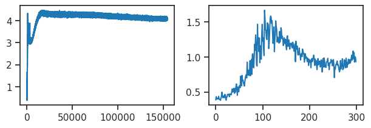
(grad > 100).sum()
0
%%time
kws = dict(
t_total=1000,
n_data_batches=50,
compute_sprs=False,
)
results = tr.analysis('vld', **kws)
_ = plot_convergence(results, color='k')
100%|█████████████████████████████████| 50/50 [01:40<00:00, 2.01s/it]
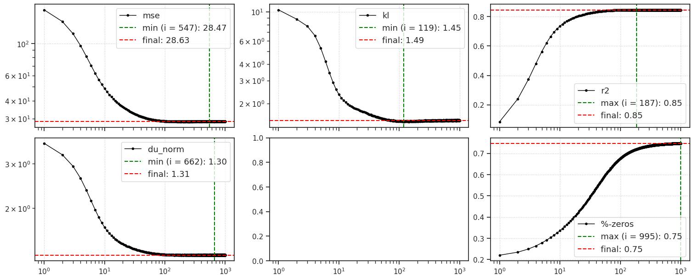
CPU times: user 2min 7s, sys: 3.6 s, total: 2min 11s
Wall time: 2min 11s